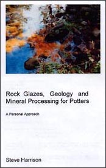

| Book Review | ||
| Rock Glazes,
Geology and Mineral Processing for Potters Material Matters – Steve Harrison’s Rock Glazes, Geology and Mineral Processing for Potters: A Personal Approach. Hot and Sticky Press 2003. ISBN 0 – 9750530 – 0 – 0. Available from http://ian.currie.to/sh/Steve_Harrisons_books.html. 'For potters must be close to the earth where their materials are; pots are of the earth and from the earth'. From ‘Rock Glazes’ by Ivan Englund F.S.T.C. A.S.T.C. Pottery, unlike painting, does not depict landscape; it is the landscape. The earth beneath the potters feet is transformed through knowledge, gained empirically or through scientific theory, which allows sticky mud, obdurate rock and the detritus of plants – even animals - to be rendered into objects which may be both useful and beautiful. In Rock Glazes, Geology and Mineral Processing for Potters: A Personal Approach, Steve Harrison examines how the studio-potter may use these materials to create glazes that echo the land in a manner that is both literal and abstract. For thousands of years, whether in the hands of village craftsmen or technocrats, these skills were an integral part of the practice of ceramics. Over time this knowledge was compartmentalized, hived off as the province of specialists. Within the manufactories of Stoke on Trent, or traditional Chinese pottery areas like Longquan or Jingdezhen, the vast scale of production led to a situation whereby those who made the pots were not the same people who made the clay, and the workers who made the glazes did not build or fired the kilns. Such is the nature of industry, an enterprise which, whilst not being without craftsmanship, is quite different to the crafts, as the term came to be understood in the late nineteenth and twentieth centuries. With the advent of the modern crafts movement came the notion of the studio-potter, and, thanks to outspoken and persuasive commentators like Bernard Leach, many craftspeople sought to work in a deliberately anti-industrial fashion. An integral part of this new model was the concept of ‘truth to materials’. Whereas industry strove to make pottery that was ever whiter, finer and glossier, many within the crafts movement sought other directions. What industry considered flaws were celebrated within the crafts, and came to define no less than an alternate aesthetic paradigm. Leach was the pivot around which this part of ceramic history turned. A Potter’s Book, published in 1940, was the first generally available text (which is not to say it was the only one) for the studio-potter to deal comprehensively with how stoneware pottery could be made outside of an industrial setting. In this book, Leach gave detailed, practical guidance of how common minerals, like feldspar, limestone and quartz, could provide the backbone for high temperature glazes. In addition, drawing on his experience of North Asian traditions, he included other non-industrial materials, wood ash, or the Japanese kimaichi stone, in his glaze recipes. A Potter’s Book contains analysis of these hitherto overlooked substances, and explains how they may modify or replace more ‘traditional’ glaze ingredients. For the first time the studio potter was able to see how the ash from their fireplace (or, in those more lenient times, the backyard incinerator) contained many of the substances necessary to construct a workable stoneware glaze. This was a radical departure from standard Western ceramic practice, but, in Leach’s view, a potter might not only gain a degree of independence by working in this way, but it would imbue their work with an organic quality, setting it apart from industrial ware. Philosophy and practice would meet, and be reconciled. The extent to which this approach was adopted, and how it may have benefited or constrained the ceramic arts, is still the subject of debate. In Australia, many of the pioneers of studio pottery followed suit. Harold and Robert Hughan, aided by Leach’s book, turned quickly from the idiom of earthenware and were amongst the very first exponents of high-fired studio-pottery. Ivan Mc Meekin, who had worked with Michael Cardew in England, became obsessed with materials, a process which would culminate in his extraordinary text Notes for Potters in Australia, a treatise on Australian ceramic materials which remains unparalleled in its rigor. Ivan Englund began his exploration of rock glazes, and, from Eileen Keys in Western Australia to Carl McConnell in Queensland, potters turned to the ground to see what vigor was in its bones. The use of ‘natural’ materials is fundamentally a stoneware technique, but in the early years kilns that could reliably reach stoneware temperatures were few and far between, and many an exciting - and risky - experiment was carried out with dripping sump-oil and jerry-rigged blowers in sheds across the country. With a copy of A Potter’s Book, or later Daniel Rhodes’ excellent Clay and Glazes for the Potter near at hand, Australian potters covered their pots in simple mixtures of clay, ash, limestone, dolomite, feldspar and quartz, crossed their fingers and waited nervously for the results. With the advent of journals and books dedicated to Australian studio pottery, information gleaned from this experimental work became available, although, Australian publishing being what it is, the pace was somewhat leisurely. It was in the pages of Pottery in Australia magazine that a meaningful dialogue began as to the nature of stoneware techniques, the clays, glazes and kilns germane to this exciting field of endeavor. Given the makeup of the editorial staff this was no surprise, and as early as the third issue (May 1963) Ivan Englund, who was then President of the Potters Society of New South Wales, the publishers of the magazine, authored an article ‘The Bumbo Latite – a useful igneous rock for potters’. It is here that we find a template for all future contributions on the use of Australian rocks in stoneware glazes, and which, somewhat belatedly, serves as an introduction to a discussion of Harrison’s book. Not unnaturally, most treatises on the subject of rock glazes have several things in common, and Harrison’s book is no exception. There is information on the chemical and physical nature of glazes, on the raw materials and how one might go about collecting them, and the all-important question of how the rocks are to be rendered into a state useful to the potter. This latter problem is addressed in two ways. One is to find a working quarry, make friends with the quarrymen, and collect the fine dust from around the crushers. This is the easy way, favored by Ivan Englund in his 1983 book on the subject, Rock Glazes. The second option is to assemble a range of implements whereby several kilos of rocks may be turned into a powder fine enough to be suspended in a glaze solution. This is the hard way, though it brings its own challenges and rewards, if you are prepared to spend the necessary time, effort and money in doing so, and if you live far enough from neighbors to get away with the racket. Steve Harrison covers both options, but, perhaps understandably given the complexity of the task (and also, I suspect, due to the fact that he just has a lot of fun doing it) it is the latter approach which is stressed. Jaw crushers, hammer mills, roller mills, disc disintegrators and especially ball mills are discussed at length, together with useful detail to do with ball sizes, speed of grinding and the wonderfully termed ‘angle of nip’. There is a revised version of his Thoroughly Modern Milling, first published in Pottery in Australia vol. 15. no’s 1 and 2 in 1976, which surely must be the last word on the subject. Furthermore – and this is where Harrison’s book delves into hitherto unexplored regions – he outlines a method by which constituent minerals, for example feldspar and silica, may be separated from the parent rock through a combination of mechanical and chemical treatments. Given the chemicals and labour involved this procedure will not appeal to most potters, but it is a fascinating account, and one which stresses his dedication to the cause. The remainder of the book addresses a variety of subjects, from testing procedures to glaze chemistry, in brief but informative terms, and one might wish to follow Harrison’s advice – and footnotes – in assembling a more extensive library on differing aspects of glaze technology or mineralogical analysis. What Steve Harrison does is to concentrate on one specific facet of ceramic inquiry, whilst locating it within a general field, and he does it well. What he does not do is delve into the philosophy behind his approach (which he terms a ‘location specific event’ ) for the stated reason that he has addressed this topic in his other writings. I found further explanation of his philosophy of ‘locality’ on the Legge Gallery website, and couldn't help comparing his arguments with those made by Ivan McMeekin in his Introduction to Notes for Potters in Australia. There, McMeekin states one of the primary reasons for writing his book was because ‘artist-potters … in Australia are in a position that is different from that of their fellows in Europe or America … (insofar that) … in England, the pottery industry has been in existence for so long that the nature and whereabouts of most of their raw materials is well known, and you can work there as an artist-potter knowing little more about your clay than its forming and firing characteristics, and that you got it from such and such supplier, if you wish …’. The inference being that Australian potters were somewhat disadvantaged in this respect, although, given that McMeekin’s book was published in 1985, it is arguable that by the mid-eighties Australian potters had access to a truly vast range of materials, both local and imported. Nonetheless, his emphasis is on assembling knowledge for the sake of knowledge, ‘in the hope that this study of our materials may lead us to knowledge of and feeling for not only the clays and rocks but the Australian environment as a whole; and that we may come to identify ourselves more with it, becoming more concerned about it and responsible for it.’ Fine sentiments indeed. Harrison’s arguments are couched in somewhat more trenchant terms, positing the use of ‘local’ materials as an antidote to globalization, and the resultant aesthetic sameness in contemporary work. He states that ‘In a time when international cultural boundaries are being smudged or collapsed by free trade agreements and globalization, one result is that simple consumer items such as ceramics are conceived in a design studio in Europe or the US and produced in a factory in China, then shipped to every first-world country in the developed world. The result is less choice, less individuality. This work is my attempt to produce a fully local product. With all its limitations and faults, and all of its local character. The French have a word ‘terroir’ that expresses some of this quality.’ One might point out that the smudging of cultural boundaries is not always a bad thing. Ceramics, tailored specifically for foreign markets, have been produced in China and shipped around the world for a very long time, and constitute some of the most beautiful wares in ceramic history, though the standard seems to have been slipping over the last few hundred years. Harrison’s work itself is the result of a fortuitous smudging of cultural boundaries, stemming as it does from the Anglo-Oriental tradition. It is worth remembering that one of Leach’s great ambitions was the bringing together of East and West, yet, whilst his transposition of oriental stoneware techniques was highly influential in the West, the Japanese audience favored his English slip-ware, ‘born’, as Yanagi rather diplomatically put it, ‘not made.’ Lastly, it is highly unlikely the monopoly of a global ceramic industry, offering less choice and individuality, will be challenged by exhibiting $500 soup bowls, no matter what their geological DNA. As a political theorist Harrison is less than convincing. Where he is very convincing is in his work, and this is where one really sees the benefits of his theories of locality. Where I am absolutely in agreement with Harrison, is in the aesthetic possibilities made possible by the use of un-refined materials. If one favors the personality and individuality brought to a pot by the inclusion of a little quartz, mica or iron in the body, or the unexpected qualities of glazes made with rock and ash, then there is nothing better than Harrison’s approach. It also returns to the potter a freedom and confidence which only comes through hands on experience, hopefully translating into work exhibiting similar qualities. Of course, it is up to the individual to decide just what is ‘local’, and an argument that rests too heavily on this concept will be difficult to sustain. After all, it is perfectly possible to live – as I do – within a short drive of quarries that supply primary and secondary clays, limestone and quartz, graded, milled and bagged, yet despite this proximity I doubt whether their use would fall within Harrison’s definition of a ‘location specific event’. What is more interesting is his use of the analogy of a ‘terroir’, referring as it does to a complex interaction of place, product and tradition. Here, Harrison’s ideals share more than a little with the burgeoning ‘slow food’ movement in Australia, as he indicates by comparing the use of local produce with local materials. Other similarities exist, for example the concept of ‘food miles’, or indeed the willingness of certain members of the public to pay a premium for an organic, hand-made product. As yet, there are no distinct appellations in Australian ceramics, but, given the history, I wouldn't be surprised if the area around Mittagong would be the first. About the author. Damon Moon is a PhD candidate in art history at the University of South Australia. His research centers around the reception of Leach’s A Potter’s Book within the post-war studio pottery movement in Australia. He is a practicing potter, with an interest in utilizing natural materials in his work. He lives and works in Willunga, south of Adelaide. Damon Moon may be contacted via email at damonmoon@internode.on.net.
|
||
| © Ceramics Today |